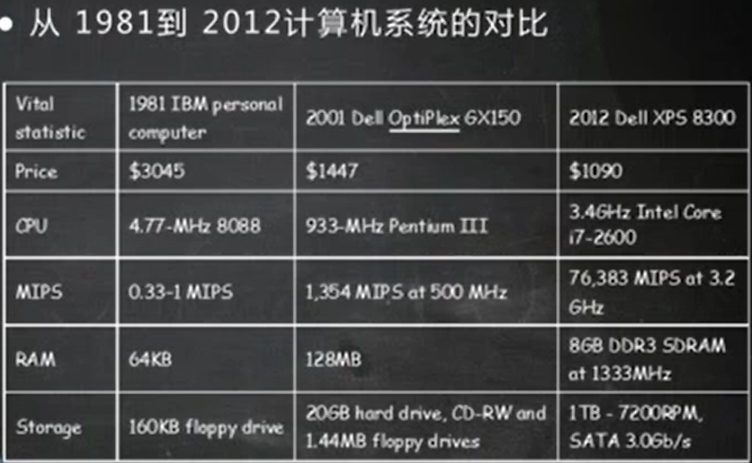

操作系统的历史：



批处理阶段（流水线）
批处理操作系统

单道批处理：
在单道批处理系统中，内存中仅有一道作业，它无法充分利用系统中的所有资源，致使系统性能较差。
多道程序设计：
在多道操作批处理系统中，用户提交的作业都存放在外存中，并形成队列，这个队列称为“后备队列”，然后作业调度程序按照作业调度算法将若干作业调入内存，多个作业同时进行，已达到CPU和资源的共享、提高资源的利用率和系统的吞吐量的目的。
背景条件：CPU是最昂贵的。多道程序设计可以减少程序等待时间，充分利用CPU资源。
单道批处理：

多道批处理：

如图：先执行程序1，执行到k.read()，程序1去申请硬盘资源；操作系统执行程序2，等到程序1 io操作完毕，再转去程序1。
多道批处理的缺点，人为交互性差，用户只能的到程序最终的执行结果。
为了更好的利用计算机资源，并且更好的和用户交互，出现了分时系统。
分时系统：

例如：千分之一秒产生一次分时（CPU时间片是千分之一秒），第一个程序执行一个时间片（千分之一秒），在转到第二个程序执行时间片。因为人的反应比较慢（相比于计算机），感觉起来就像是两个人都在独自占用一个计算机在操作。

分布式

操作系统的发展趋势：

从早期的，一群人围绕这一个计算机，到现在一群计算机围绕着一个人服务。
操作系统的结构
UNIX是用C语言编写的，用C语言和汇编语言有很大的区别，汇编语言是和机器相绑定的，不具备可移植性。

uCore是仿照UNIX操作系统。
ucore是单体的模块化的操作系统的架构设计，单体意味着各个模块之间是通过函数调用来实现访问的，将文件管理，内存，进程线程管理都放在一起的话，会使的软件（操作系统）比较复杂，能不能把软件变得尽量小巧，使得不同的功能是以更外层的模块的形式存在，模块和模块之间不是通过函数调用这种紧耦合的方式实现，而是类似于消息传递这种松耦合的方式实现。以此 衍生出了
微内核的设计，尽可能把内核功能移到用户空间。
内核中只存在最基本的功能。比如，中断处理，消息传递。
而文件系统，内存管理，网络协议栈等等都是放在外围，以进程或者程序的形式存在，是以一种服务的形式存在，服务和服务之间是通过内核的消息传递机制来进行通讯，这是一种松耦合的架构。
微内核设计的优点：各个模块之间是通过消息传递机制通讯的，模块之间耦合度低，可扩展性高。
微内核设计的缺点：性能问题。这种设计不如函数调用性能好。
学术界存在另一种更加极端的架构，”外核“，这种架构是希望内核分为两块，一块跟硬件功能打交道，完成硬件功能的复制，另一块跟具体应用打交道。
虚拟机


充分发挥计算机效率。